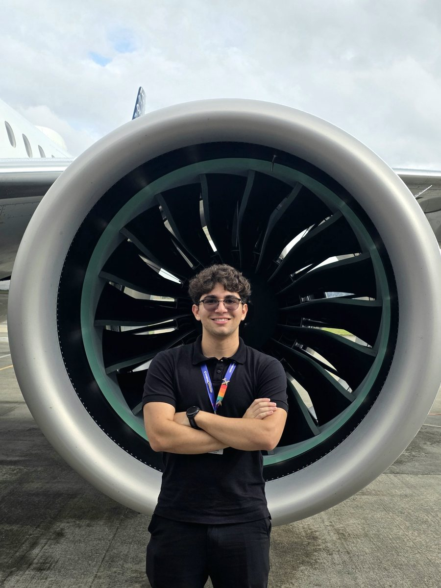
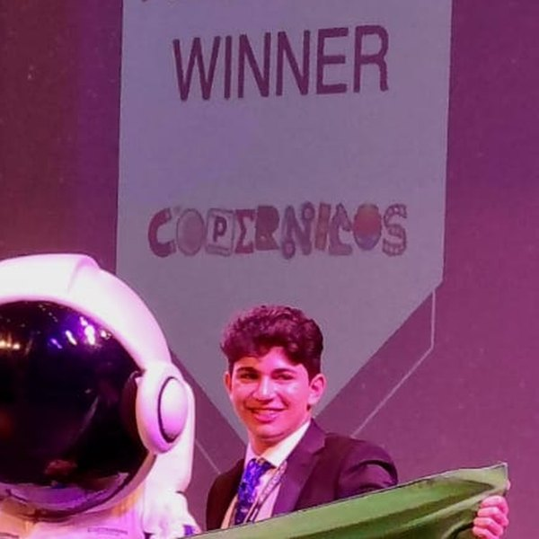
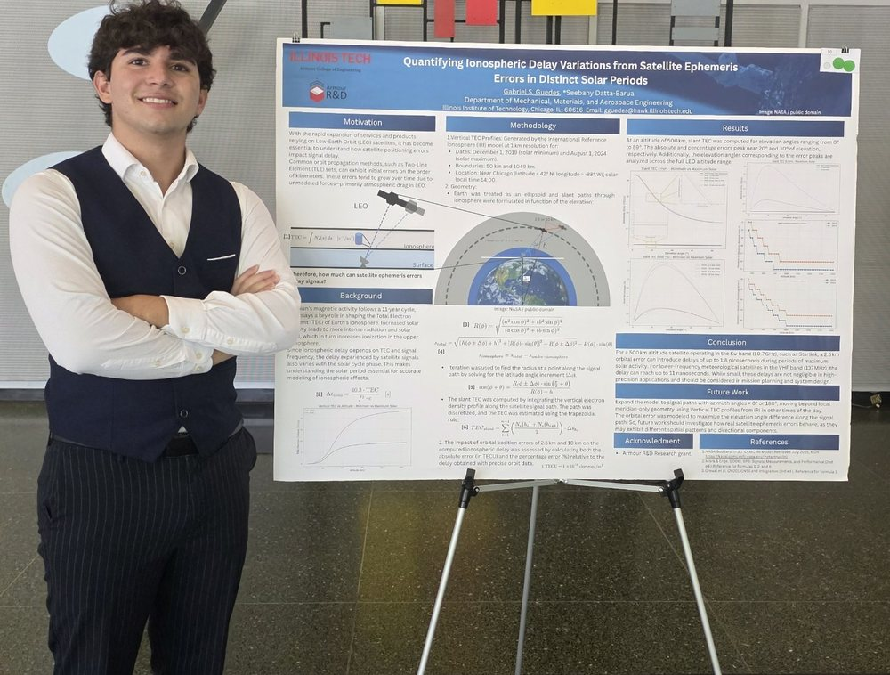
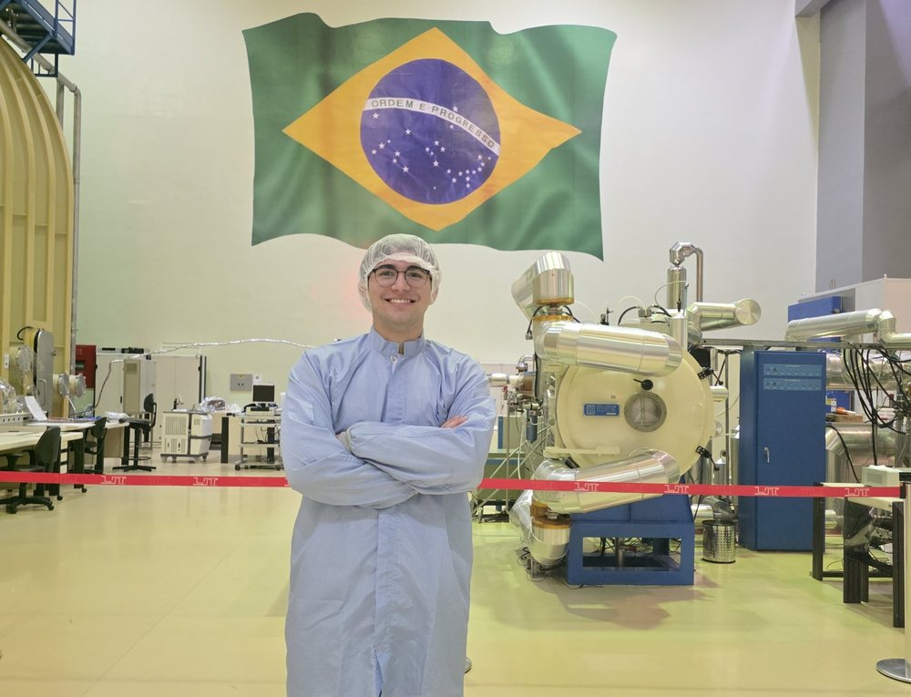
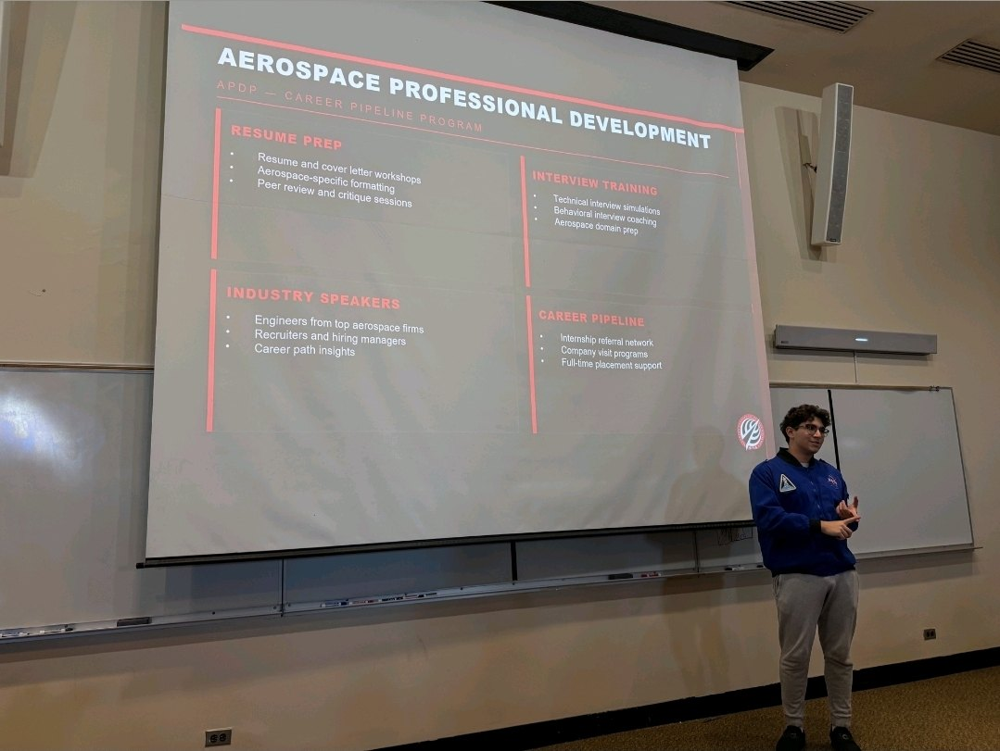

Gabriel Souza Guedes
Aerospace engineering at Illinois Tech. I work on how vehicles know where they are: satellite navigation and GNC.
From the Amazon to orbit
Raised between Manaus and the rural Amazon. Self-taught for science olympiads, now modeling GPS and Galileo orbits, heading toward a Ph.D. in GNC.


At Embraer, 2026. Gold at the Copernicus Astrophysics Olympiad in Houston, top 3 of 680 from 20 countries.
Research
Satellite orbits, signal errors and how much we can trust a position.
NavLab, CARNATIONS
Sep 2026 to PresentSimplifying GPS and Galileo orbit models toward 10 to 15 cm accuracy.
More
- Simplifying an empirical orbit model with dozens of parameters for GPS and Galileo satellites toward a 10 to 15 cm (1σ) accuracy target, using orbital perturbation analysis and parameter ablation.
- Built a Monte Carlo covariance framework in Python that trades the number of ground stations against model size, over ~1,400 GPS and Galileo satellite days of 2025 IGS/MGEX data.
- Modeled GNSS code and carrier phase measurements and evaluated SISRE, the worst user error metric used for ARAIM integrity monitoring.
- CARNATIONS is a U.S. DOT Tier 1 University Transportation Center.
Space Weather Lab, Illinois Tech
Jun 2025 to Jul 2025How orbit errors leak into ionospheric delay: from 1.8 ps (Ku band) to 11 ns (VHF) at solar maximum.

Saipher ATC, Brazil
Jun 2025 to Sep 2025Python pipelines validating SP3/RINEX orbit data, now part of production software.
Projects
Tap one to open it.
Industry and leadership
Data Science Intern, Embraer
Summer 2026
Visiting INPE's satellite integration and test lab during the internship.- Team Co-Lead, SELENENASA RASC-AL 2025
- VP of Professional DevelopmentAIAA Illinois Tech
- Co FounderBrazilian Association at IIT
- Tau Beta Pi2026
- M.A. Lila and Self Leadership Academy, full tuition1 of 8

Presenting the AIAA Aerospace Professional Development program, 2026.Toolkit
Coursework: Linear Algebra, Differential Equations, Vector Calculus, Computational Mechanics. Astrodynamics self-taught for research.
Earthrise. Let's talk.
Looking for Summer 2027 internships and research in navigation, GNC and autonomy.